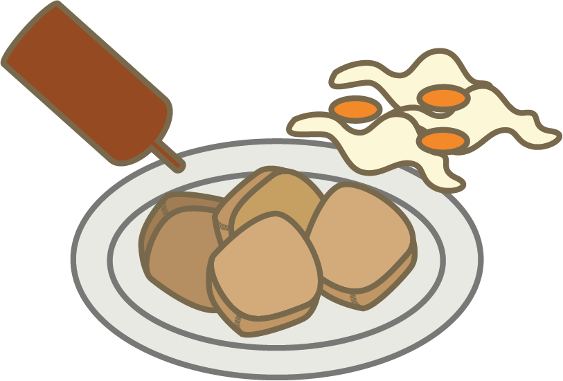

臭豆腐
STINKY TOFU
Stinky tofu is one of the worst smelling food in Taiwan. They are served either boiled or fried and often with Taiwanese kimchi and soy sauce. If you can get over the smell, it is soft and crunchy at the same time. This is a must have when you go to the night market, and will often see people walking around with a bag full of these.